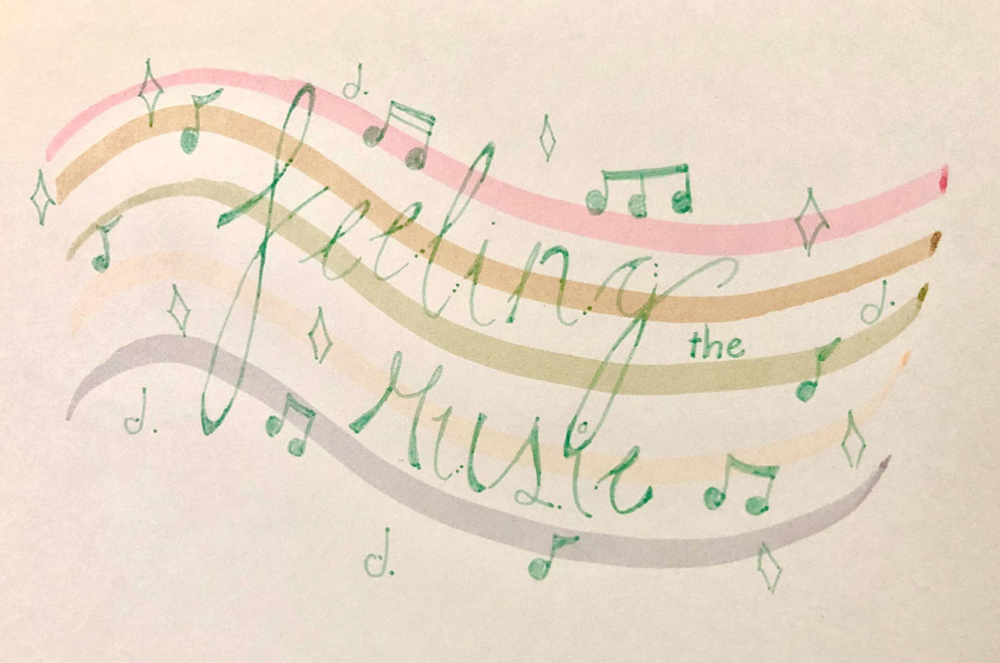

<!DOCTYPE html>
<html lang="en">
<head>
    <meta charset="UTF-8">
    <meta http-equiv="X-UA-Compatible" content="IE=edge">
    <meta name="viewport" content="width=device-width, initial-scale=1.0">
    <title>Homepage</title>
    <link rel="stylesheet" href="style.css">
</head>
</html>

<body>
    <div id="wrapper">
        <header>
            <h1>Solomon Vidal</h1>
            <h2>Feeling the Music</h2> 
            <nav>
                <div class="links">
                    <a href="index.html">Home</a>
                    <a href="about.html">About</a>
                    <a href="interviews.html">Interviews</a>
                    <a href="contact.html">Contact</a>
                </div>
            </nav>
        </header>
        
        <h2>Welcome to Feel the Music!</h2> 
    
        <figure>
            
        </figure>

        <div class="flexbox">
            <div class="music">
                
            </div>
            <div class="feel-the-music-text">
                <h3>What is "Feeling the Music"?</h3>
                <p>Feeling the music is an interview project that focuses on music and how it can affect people.</p>
    
                <h3>What is Music to Me?</h3>
                <p>Music, to me, is something I can listen to when I want to regulate my emotions, have fun, or ise it as a way to get in the zone to focus on my work.</p>
            </div>
        </div>
    
        <br>
        <br>
    
    </div>
        
    <footer>
        <h2>&copy; Vidal 2023</h2>
    </footer>

    <a href="#top" class="back-to-top">&uarr;</a>
    
</body>
